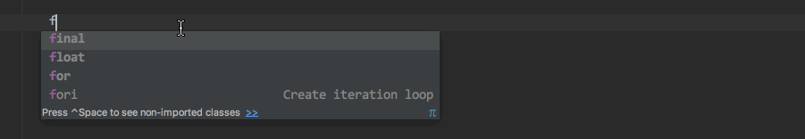
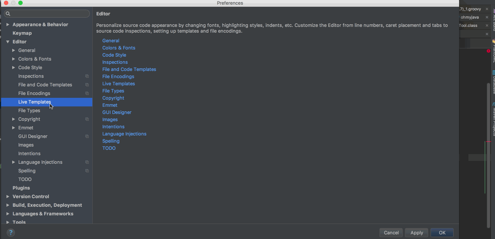
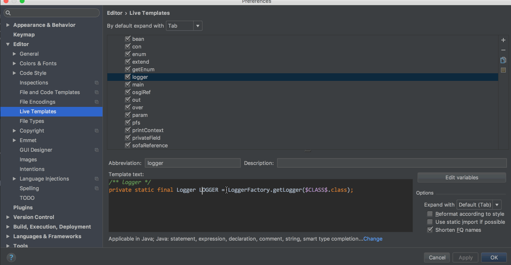
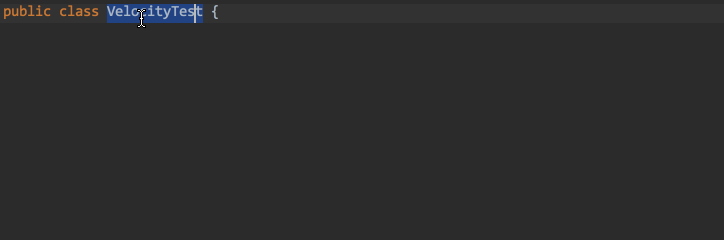
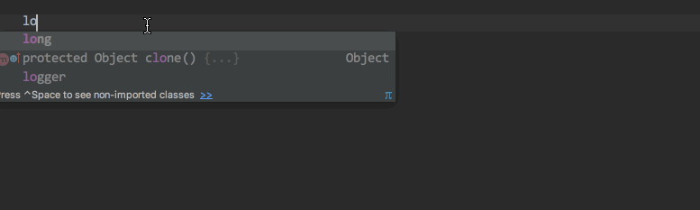
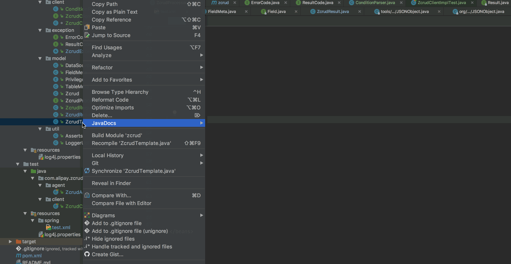
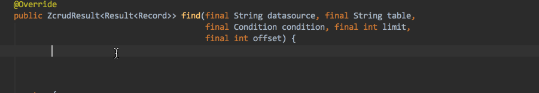

前言
Java 开发过程经常需要编写有固定格式的代码，例如说声明一个私有变量，logger或者bean等等。对于这种小范围的代码生成，我们可以利用 IDEA 提供的 Live Templates功能。刚开始觉得它只是一个简单的Code Snippet，后来发现它支持变量函数配置，可以支持很复杂的代码生成。下面我来介绍一下Live Templates的用法。
基本使用
IDEA 自带很多常用的动态模板，在 Java 代码中输入fori，回车就会出现
for (int i = 0; i < ; i++) {
}

按Tab可以在各个空白处跳转，手动填值。
自定义 Template
官方自带模板毕竟不能满足我们个人编码风格的需要，Live Templates提供了变量函数的方式供我们自定义。
简单用法
新增自定义模板，首先需要填写触发单词（即 Abbreviation），描述是可选的，然后定义模板的上下文，点击define选择Java，这样在编辑 Java 的时候就会触发当前模板，定义完上下文之后，就可以填写模板了。

下面列举几个我常用的简单模板
==========
<out>
----------
System.out.println($END$)
==========
<pfs>
----------
private final static String $varName$ = "$var$";`
==========
<privateField>
----------
/**
* $COMMENT$
*/
@Getter
@Setter
private $TYPE$ $NAME$;
==========
<main>
----------
public static void main(String[] args) {
$END$
}
==========
模板支持变量的定义，使用$$包围的字符表示一个变量。$END$是一个特殊的预定义变量，表示光标最后跳转的位置。每个变量的位置都可以跳转过去。
高级用法
如果你用过 vim 的Code Sinppet插件，你会发现模板里面是可以执行函数的，强大的 Live Templates当然也支持，而且 IDEA 能够感知代码的语义，例如说当前编辑的函数的参数。但这一点就能够让我们玩出花来。我们从易到难来研究模板函数的功能。

前面我们提到的变量可以绑定函数，配置方式如上图所示。
快速声明变量
声明变量是一个常用的操作，特别是需要声明变量需要加注解，注释的时候，这些代码写起来就很枯燥。下面是我定义的模板：
<osgiRef>
----------
/**
* $END$
*/
@OsgiReference
@Setter
private $TYPE$ $NAME$;
乍一看这个模板跟我上面定义的privateField差不多，唯一的不同在于我给这些变量绑定了函数。
clipboard()：返回当前粘贴板的字符串decapitalize()：将输入的字符串首字母变为小写
下面我们演示一下，我们先拷贝当前类名，然后输入osgiRef

快速声明 logger
声明 logger 也是一个常用的操作，上面我们是利用了粘贴函数来快速声明变量，现在我们来利用另一个函数className()，顾名思义，它的作用就是返回当前类名。
<logger>
----------
/** logger */
private static final Logger LOGGER = LoggerFactory.getLogger($CLASS$.class);

最强大的 groovyScript()
如果说上面用到的函数提供的能力有限，不够灵活，那么groovyScript()提供了一切你想要的能力，它支持执行 Groovy 脚本处理输入，然后输出处理后的字符串。
groovyScript("code", ...)
| code | 一段Groovy代码或者Groovy脚本代码绝对路径 |
| ... | 可选入参，这些参数会绑定到`_1, _2, _3, ..._n`, 在 Groovy 代码中使用。|
下面我们来看一下它的实际应用。
快速 bean 配置
新增一个服务都要在 Spring 中注册一个 bean，一般这个配置无非就是将指明id和class，由于我们是在 xml 中配置，所以不能利用className()函数，但是我们可以利用clipboard()函数获取到类的全引用，在 IDEA 中我们直接右键类名，点击Copy Reference就行。然后执行 groovy 脚本获取类名。
<bean>
----------
<bean id="$id$" class="$REF$" />
id绑定decapitalize(groovyScript("_1.tokenize('.')[-1]", clipboard()))，首先取clipboard()的值得到类的全引用，然后执行 groovy 代码_1.tokenize('.')[-1]（按.分割为字符串数组，然后取最后一个即可得到类名，然后用decapitalize()将首字母小写即可得到id。

快速打印当前上下文信息
打印错误日志的时候需要打印当前上下文信息的，例如说入参，有时候入参很多的时候，写起来很痛苦，好在有模板函数methodParameters()，返回当前函数参数的列表，当然这个列表我们不能直接使用，需要结合groovyScript对它进行转化。
<printContext>
---------------
LogUtil.$TYPE$(LOGGER, "$MSG$ " + $params$);
将params绑定到groovyScript("'\"' + _1.collect { it + ' = [\" + ' + it + ' + \"]'}.join(', ') + '\"'", methodParameters())，就能够自动将当前函数的参数格式化后输出。

总结
上面我们简单介绍了常用的模板函数，其实 IDEA 还有很多其它模板函数，具体参考Creating and Editing Template Variables。IDEA 是一个很强大的工具，善用工具能够极大的提高工作效率，将精力投入到关键的事情上，而不是将时间浪费在编写重复代码上面。一些更高级的用法还有待大家去发掘。最后推广一波我写的代码生成插件CodeMaker，好好利用也能节省很多重复编写代码的时间。